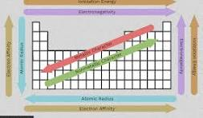

Overview: Chemistry studies matter, its properties, and how substances interact.
Focus: Periodic trends explain patterns in the periodic table — such as atomic size, ionization energy, and electronegativity — that describe how elements behave.
Periodic trends help predict how elements will react with each other. Recognizing these patterns makes it easier to understand chemical equations and reactions. The periodic table is a powerful tool for scientists and students alike.
